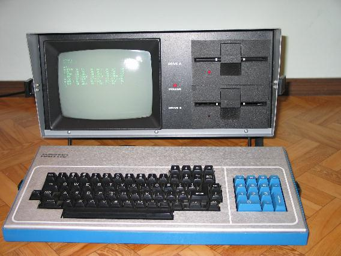
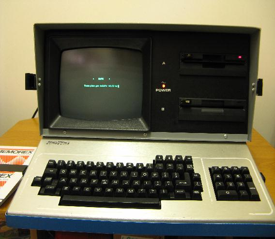

Komputery KAYPRO produkowane by³y przez amerykañsk± firmê Non-Linear Systems za³o¿on± przez Andy Kay'a w 1952r. Pracowa³y pod sytemem CP/M. Pierwszym z nich, wypuszczonym na rynek w 1982r. by³:
KAYPRO II

Procesor Z80 / 3,5MHz.
RAM 64kB
ROM 4KB
Procesor graficzny: brak.
Rozdzielczo¶æ maksymalna: tekst 80 X 24
Grafika: Brak
Tryb tekstowy 80 kolumn w 24 wierszach
Wyj¶cie video:wbudowany zielony monitor 9"
Porty: Centronics, RS232, port klawiatury
Peryferia: Wbudowane dwa napêdy dyskietek 5,25" jednostronne 40 ¶cie¿kowe.
D¼wiêk: Wbudowany beeper.
KAYPRO 2

Procesor Z80 / 3,5MHz.
RAM 64kB
ROM 4KB
Procesor graficzny: 6845.
Rozdzielczo¶æ maksymalna: tekst 80 X 24
Grafika: semigrafika
Tryb tekstowy 80 kolumn w 24 wierszach
Wyj¶cie video:wbudowany zielony monitor 9"
Porty: Centronics, RS232, port klawiatury
Peryferia: Wbudowane dwa napêdy dyskietek 5,25" dwustronne 40 ¶cie¿kowe 390kB.
Mo¿liwa by³a instalacja dysku twardego 10MB, RTC oraz modemu.
D¼wiêk: Wbudowany beeper.
|